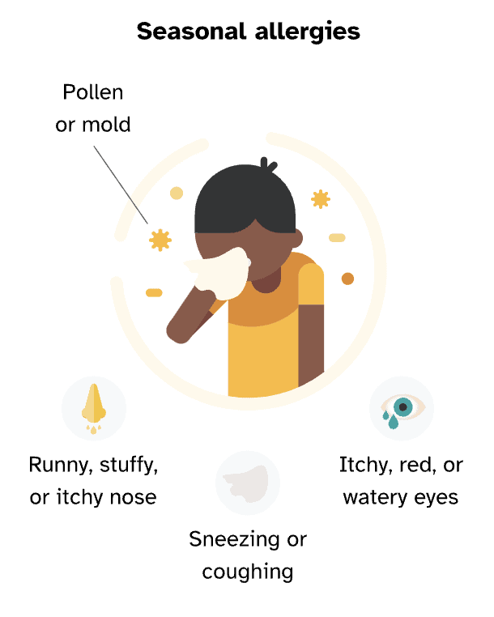
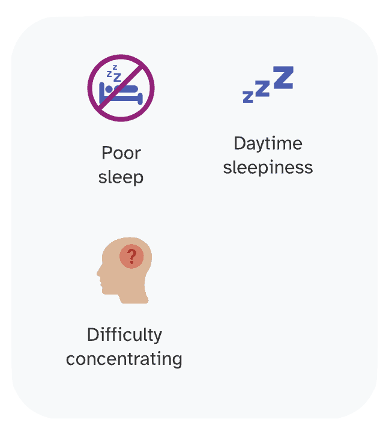

Seasonal allergies, also known as hay fever or allergic rhinitis, occur when the immune system overreacts to small airborne particles called allergens. These can include mold or pollens from trees, grasses, or weeds. Symptoms typically occur at certain times of the year and vary based on allergen exposure.
Common symptoms include sneezing, runny or stuffy nose, itchy or watery eyes, and coughing. Seasonal allergies can also predispose individuals to asthma and may cause difficulty breathing or wheezing.

Living with Seasonal Allergies
Seasonal allergies can significantly impact quality of life, affecting sleep, causing daytime fatigue, and impairing physical and cognitive performance. Fortunately, various treatments such as antihistamines, nasal sprays, nasal irrigation, and immunotherapy can effectively manage symptoms.
If you are experiencing symptoms of seasonal allergies, it's advisable to consult with a healthcare professional to explore treatment options.

Is Seasonal Allergies Genetic?
Genetics do play a role in seasonal allergies, influencing an individual's likelihood of developing them. Allergies can run in families, indicating an increased risk if family members have seasonal allergies. Genetic variants collectively impact susceptibility, although other factors besides genetics also contribute.
23andMe considers over 6,500 genetic markers to estimate the genetic predisposition for seasonal allergies.
Other Factors in Seasonal Allergies
Besides genetics, additional factors influencing seasonal allergies include:
- Family history of allergies
- Presence of other allergic conditions or eczema
- High allergen exposure due to living or working environment